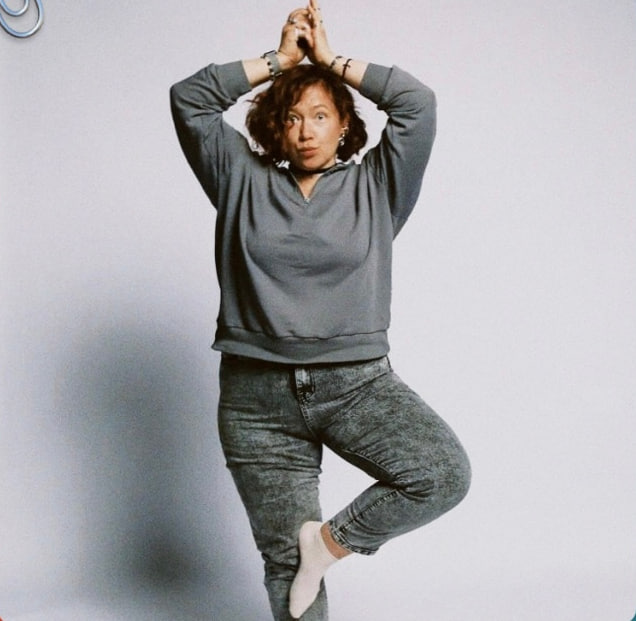

Индивидуально
Личная консультация
60 минут работы один на один. Разбираем ваш запрос, работаем с травмой, виной, отношениями.
- Онлайн (Zoom / Skype) или офлайн
- Длительность: 60 минут
- Подходит для первого шага
Работаю с последствиями деструктивного детства: виной, стыдом, тревогой, сложностями в отношениях. Потому что сама через это прошла.

Привет. Я Ксения — психолог, телесный терапевт и коуч.
Я специализируюсь на работе с последствиями деструктивного детства, потому что сама через это прошла и знаю: это можно пережить.
С 2019 года провела сотни консультаций, прошла собственную терапию и супервизии. Работаю со взрослыми, которые выросли в семьях, где не было безопасности, принятия и здоровых границ.
Моя задача — помочь вам выйти из сценариев вины, стыда и самокритики, вернуть себе опору и разрешение жить свою жизнь.
Высшее психологическое образование, постоянные супервизии и повышение квалификации
Прошла собственную терапию. Знаю изнутри, о чем говорю
Телесно-ориентированная терапия, работа с травмой, коучинг
Если вы узнали себя хотя бы в нескольких пунктах — я могу помочь
Чувство, что «со мной что-то не так»
Постоянное чувство вины и стыда
Привычка подстраиваться под других
Сложности в построении отношений
Тревога и страх отвержения
Зависимость от чужого одобрения
Повторяющиеся сценарии в жизни
Ощущение внутренней пустоты
Выберите то, что подходит именно вам
60 минут работы один на один. Разбираем ваш запрос, работаем с травмой, виной, отношениями.
10 недель последовательной работы в безопасной группе. Темы: страх, вина, стыд, отношения, память тела.
4 недели глубокой работы. Подкасты, статьи, задания, групповые созвоны. Тема текущей смены — СТЫД.
Материалы, которые помогут сделать первый шаг уже сегодня
40-минутная лекция о том, как формируется травма и почему ВДД так сложно доверять. С практикой «здесь и сейчас».
Смотреть МК«Ребёнок, который выжил» — во вселенной Гарри Поттера. Задания с полями для заполнения, чтобы прожить опыт.
Скачать бесплатноПолезный контент про ВДД, травму, отношения. Подкасты, статьи, поддержка. Подписывайтесь.
Перейти в каналЗапустите Telegram-бота — он проведет вас через бесплатный мастер-класс, расскажет про практикум и поможет выбрать формат работы.
Консультация длится 60 минут, проходит онлайн (Zoom, Skype, Telegram) или офлайн. Мы обсуждаем ваш запрос, работаете с чувствами, телом и мыслями.
ВДД — взрослые дети деструктивных семей. Это люди, которые выросли в семьях, где не было безопасности, принятия и здоровых границ.
Зависит от запроса. Для разового запроса может хватить 3-5 сессий. Для глубокой работы с травмой обычно рекомендуется от 10 встреч.
В группе вы получаете опыт здоровых отношений «здесь и сейчас» — то, чего часто не хватало в детстве.
Заполните форму на странице «Записаться» — я свяжусь с вами в течение 24 часов. Оплата возможна картой через безопасную систему.
Первый шаг — самый сложный. Но вы уже здесь, а значит — готовы.
Записаться на консультацию